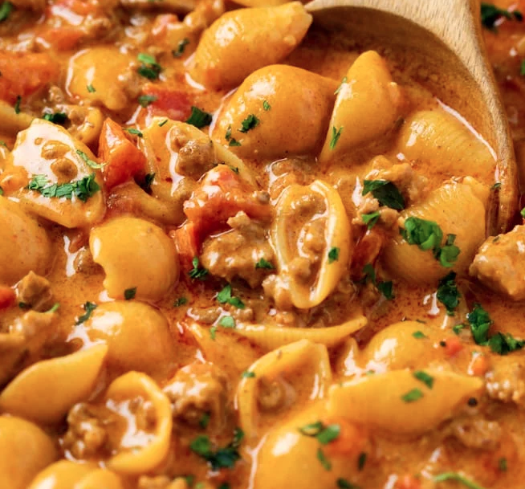

Taco Pasta

Very quick and simple taco pasta is a favourite of may of our friends
- 1 can - lentils
- 1 large jar - salsa
- 1 pack - taco seasoning
- 12 ounces - large pasta shells
- 1 container - vegtable broth
- 1 bag - shredded cheese
- optional - sour cream
- add all ingredients except cheese to Instant Pot
- use the pressure cook seeting for 6 minutes
- quick release the Instant Pot after time completes
- Stir in sredded cheese and serve
- otional - top with sour cream